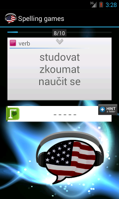

Hádejte písmena.
Toto je trochu upravená verze klasické šibenice. V této hře jsou pouze vítězové a žádným způsobem není limitován počet hádaných písmen. Cvičení je omezeno na doplňování pouze anglických slov.
Budete hádat pouze anglický význam a kartička Vás dokonce nechá přehrát výslovnost. Slovo k hádání je symbolizováno řadou pomlček a kartička Vám ukáže kategorii slova (slovní druh). Správně uhodnutá písmena jsou doplněna na jejich správné pozice.
Pokud si nemůžete vzpomenout na překlad slovíčka, použijte výslovnost. V případě potřeby použijte tlačítko Hint, které za Vás uhádne správné písmeno.
Posunutím kartičky doprava se přesunete na další kartičku (pouze po plném dokončení původní kartičky).
Toto je jedno ze tří cvičení pro spelling. Kliknutím na ikonu vedle textu si můžete během cvičení přepínat mezi různými typy obtížnosti cvičení Hangman (Šibenice), Spell out (Hláskování) a Spell Random.